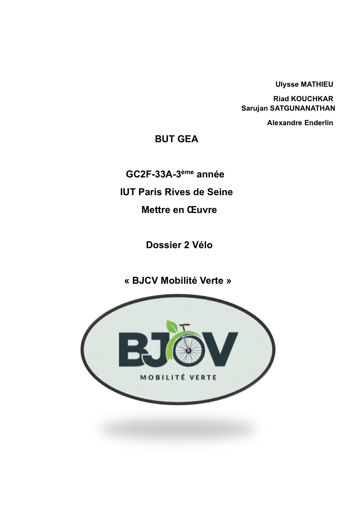
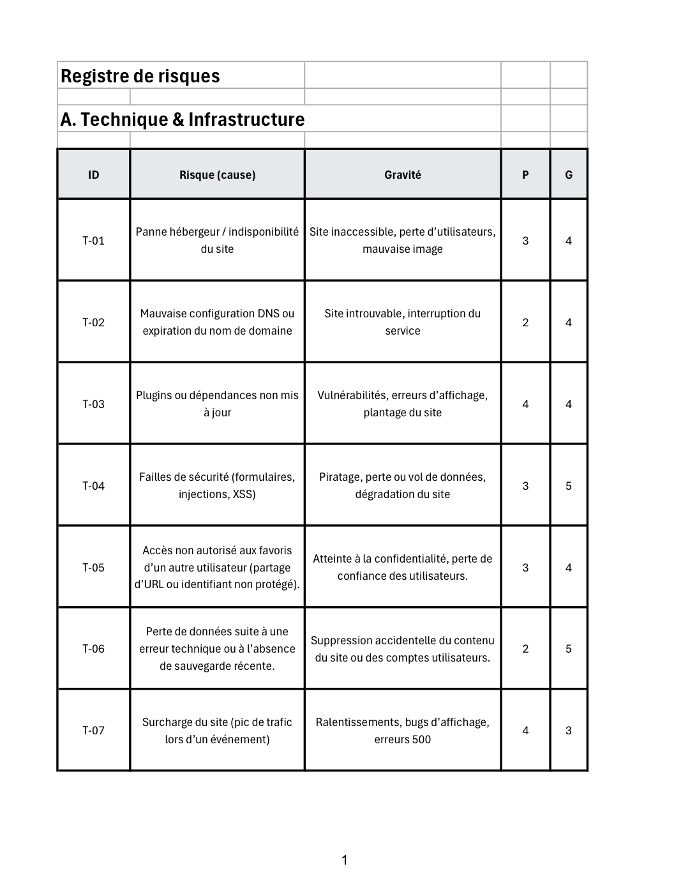
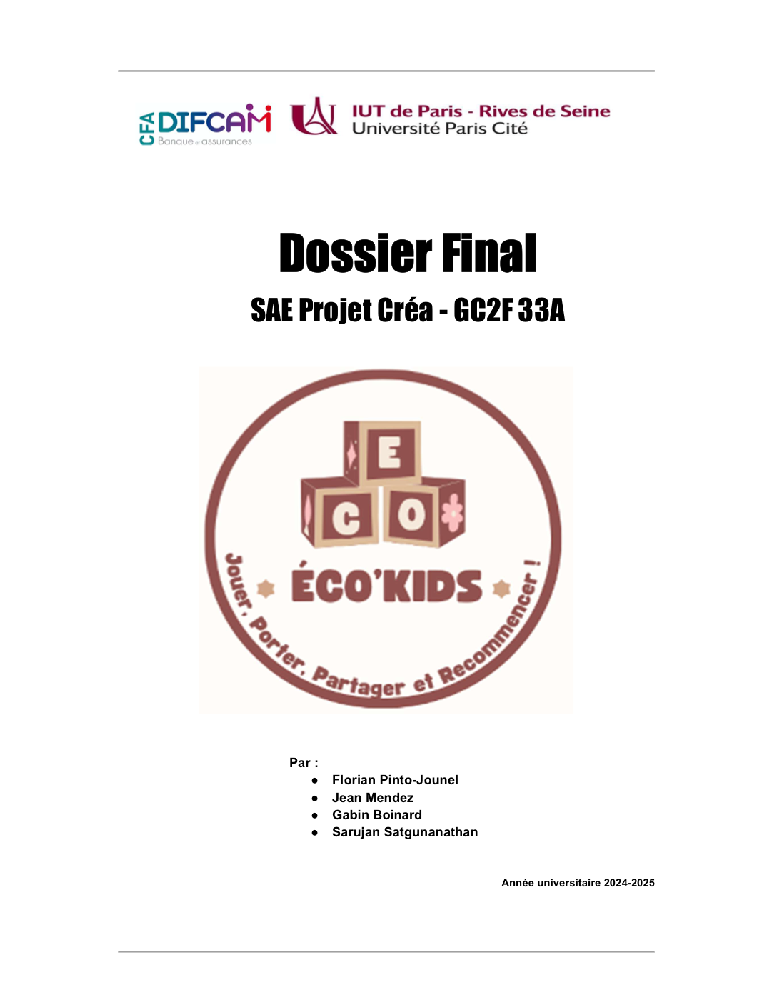
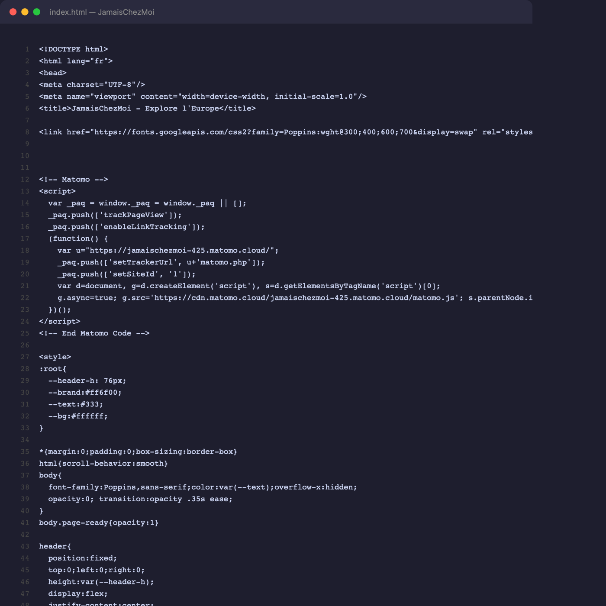

Sarujan Satgunanathan — BUT Gestion des Entreprises et des Administrations, parcours Gestion comptable, fiscale et financière · IUT de Paris Rives de Seine
Au badminton comme en gestion : on lit le jeu, on décide vite, on tient l'échange. Voici la preuve, coup après coup, de ce que mes trois années m'ont appris.
Étudiant en BUT3 GEA (parcours Gestion comptable, fiscale et financière), je relie ici mes expériences en entreprise et mes SAE aux cinq compétences du diplôme — du premier service au dernier point.
Un échange suit toujours la même logique. Mes cinq compétences aussi — chacune est un coup du rallye.
Observer avant de frapper.
Choisir le bon coup.
Se coordonner à plusieurs.
Le geste juste, répété.
Revoir pour ajuster.
Compétence 1 · Analyser les processus de l'organisation dans son environnement
Avant de frapper, on lit le terrain : comprendre l'organisation et ses enjeux avant d'agir. Niveau visé : 3.
| Conseiller la forme juridique la plus adaptée | Maîtrisé |
| Évaluer la performance des processus et proposer des améliorations | Acquis |
*Deux apprentissages critiques retenus pour cette compétence, avec leur degré d'acquisition.
Apprentissage critique 1
Conseiller un type d'organisation adapté au porteur de projet.
La trace : note de conseil comparant SARL et SAS pour un porteur de projet.
L'analyse : le choix ne relève pas du droit récité mais d'un arbitrage : régime social du dirigeant, fiscalité des dividendes, gouvernance, protection du patrimoine. La compétence se prouve dans la hiérarchisation de ces critères selon le profil du porteur — donc dans la capacité à transformer une connaissance juridique en recommandation engageante.
Apprentissage critique 2
Évaluer la performance des processus et proposer des améliorations.
La trace : diagnostic stratégique de l'entreprise cible (SAE reprise).
L'analyse : la difficulté n'est pas de décrire l'entreprise mais de relier ses faiblesses internes aux menaces du marché pour isoler les rares leviers réellement actionnables. La progression tient là : passer d'un diagnostic exhaustif et descriptif à une priorisation qui oriente la stratégie de reprise.

Compétence 2 · Aider à la prise de décision
La balle arrive vite : choisir le bon coup à partir de la donnée, du cadre juridique et du risque. Niveau visé : 3.
| Évaluer les risques et bâtir un plan de maîtrise | Maîtrisé |
| Analyser les contraintes juridiques (Droit numérique & RGPD) | Acquis |
| Exploiter des données pour accompagner la décision | Acquis |
*Trois apprentissages critiques retenus pour cette compétence, avec leur degré d'acquisition.
Apprentissages critiques 22.05 & 32.04
Évaluer les risques et élaborer des mesures préventives de minimisation.
La trace : Fichier Excel interactif comprenant une Grille de scoring, un Registre des risques et un Plan d'action.
L'analyse : Coter la probabilité et l'impact permet d'objectiver un risque perçu au départ de façon subjective (obtention de la criticité brute). L'enjeu n'est pas qu'un simple inventaire : grâce à l'onglet "Plan d'action et contrôles clés", j'ai proposé des solutions concrètes de réduction des risques (sauvegardes, chiffrement, formations) pour obtenir une criticité nette. La cartographie devient ainsi un véritable outil d'aide à la décision.

Apprentissage critique 22.04
Analyser les contraintes et leur impact sur le fonctionnement de l'organisation.
La trace : Mini-registre RGPD intégré au fichier Excel et conception de ce site internet codé.
L'analyse : Le droit numérique impose de lourdes obligations. Mon mini-registre RGPD prouve ma capacité à identifier ces contraintes (mentions légales, obtention du consentement, protection contre la fuite de données). Mieux encore, la création de ce portfolio m'a permis de comprendre comment ces contraintes dictent directement la structure technique et la gestion des données d'un projet web.
Apprentissage critique 3
Exploiter des données pour accompagner une décision d'investissement.
La trace : Tableau des flux actualisés (DCF) et budget de trésorerie de la reprise.
L'analyse : le DCF transforme des données incertaines en une fourchette décisionnelle. Le raisonnement se joue dans la sensibilité aux hypothèses : décider, c'est savoir quelle hypothèse fait basculer le « go / no-go » et pouvoir la défendre.
Compétence 3 · Piloter les relations avec les parties prenantes de l'organisation
En double, on ne gagne pas seul : se placer, communiquer, porter le projet à plusieurs. Niveau visé : 3.
| Mener un projet collaboratif dans la durée | Maîtrisé |
| Combiner les méthodes de communication selon la stratégie | Acquis |
*Deux apprentissages critiques retenus pour cette compétence, avec leur degré d'acquisition.
Apprentissage critique 1
Mener un projet collaboratif et mobiliser l'intelligence collective.
La trace : dossier et présentation finale du projet Eco Kids.
L'analyse : mener le projet a surtout supposé d'aligner des contributions hétérogènes sous contrainte de temps, et d'arbitrer en continu entre avancer vite et garder l'équipe soudée. La compétence se lit dans cet arbitrage, pas dans le livrable lui-même.

Apprentissage critique 2
Combiner les méthodes de communication en lien avec la stratégie.
La trace : Architecture de ce e-portfolio codé de A à Z.
L'analyse : Coder le site a imposé de traduire un objectif de communication en arborescence et en hiérarchie visuelle : que voit-on d'abord ? Vers quoi l'évaluateur est-il dirigé ? Le geste technique de programmation sert ici une intention stratégique claire — c'est ce lien qui fait la preuve de la compétence.

Compétence 4 · Produire l'information comptable, fiscale et sociale de l'organisation
Le footwork, les gammes : le geste juste, répété avec rigueur, sur lequel tout repose. Niveau visé : 2.
| Produire et sécuriser une information comptable fiable | Maîtrisé |
| Évaluer les actifs et passifs pour une information décisionnelle | Acquis |
*Deux apprentissages critiques retenus pour cette compétence, avec leur degré d'acquisition.
Apprentissage critique 1
Traiter, contrôler et sécuriser l'information comptable, fiscale et sociale.
La trace : livrables d'alternance (anonymisés) — clôtures, rapprochements, révision.
L'analyse : en conditions réelles, la difficulté est la fiabilité sous délai. Les contrôles de cohérence ne valident pas un travail déjà fait : ils sont la condition même de la confiance accordée à l'information produite. Maîtriser cela, c'est endosser la responsabilité de la qualité, pas seulement la saisie.
Apprentissage critique 2
Évaluer les actifs/passifs et déterminer charges et produits.
La trace : feuille de retraitements de la cible (SAE reprise).
L'analyse : les retraitements révèlent l'écart entre la comptabilité affichée et la réalité économique. Les choisir, c'est arbitrer ce qui est normatif et ce qui ne l'est pas — donc produire une information assez fiable pour fonder une valorisation. Le chiffre n'a de valeur que par ce tri.
Compétence 5 · Évaluer l'activité de l'organisation
On revoit le match : rentabilité, trésorerie, budgets — pour décider des ajustements. Niveau visé : 2.
| Mesurer la rentabilité d'un investissement | Maîtrisé |
| Piloter la trésorerie sur le court terme | Acquis |
| Construire des budgets prévisionnels cohérents | Acquis |
*Trois apprentissages critiques retenus pour cette compétence, avec leur degré d'acquisition.
Apprentissage critique 1
Mesurer la rentabilité d'un investissement.
La trace : tableau des flux actualisés (DCF) — dossier reprise d'entreprise.
L'analyse : mesurer la rentabilité, c'est rendre explicite et défendable le scénario sous-jacent plutôt que produire un nombre. La maîtrise se voit dans la capacité à assumer les hypothèses et à montrer leur effet sur la décision d'investir.
Apprentissage critique 2
Réaliser la gestion de trésorerie sur le court terme.
La trace : budget de trésorerie mensuel de la première année.
L'analyse : le pas mensuel fait apparaître des tensions de trésorerie invisibles dans un prévisionnel annuel. Anticiper ces creux conditionne la survie de la reprise : la compétence est dans l'anticipation, pas dans le calcul.
Apprentissage critique 3
Réaliser à moyen terme des budgets d'exploitation et des bilans prévisionnels.
La trace : Compte de résultat et bilan prévisionnels sur 3 ans.
L'analyse : Construire ces états financiers demande de lier la stratégie commerciale à la réalité comptable. L'objectif n'est pas d'avoir une certitude absolue, mais de bâtir un modèle cohérent pour s'assurer de l'équilibre financier global du projet.